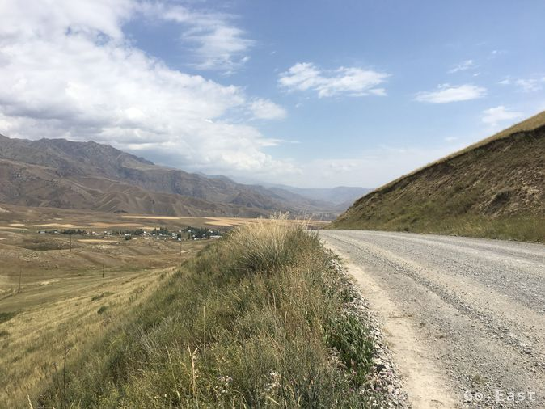
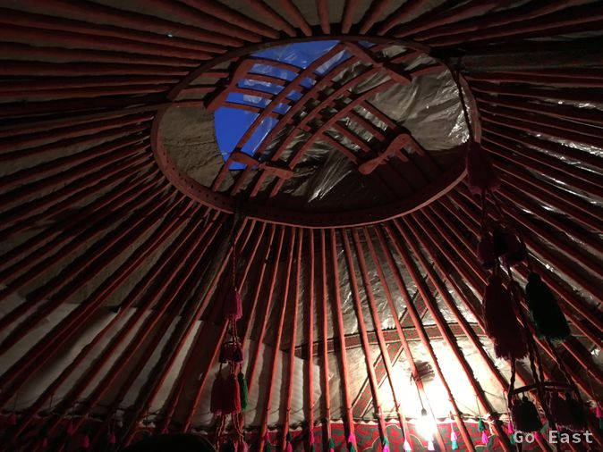

Wir frühstücken in der "Restaurantjurte".
Wir brechen auf und tanken am Ortsausgang bei einer Tankstelle mit Zapfsäulen aus Deutschland. Es ist deutsche Schrift und EURO-Zeichen drauf.

Die Piste lässt sich etwas schneller fahren und ist mit Wellblech und Schotter durchsetzt. Verkehr sehr dünn. Es geht wieder hoch ins Gebirge und landschaftlich sehr schön. Viel Staub bei Gegenwind. Als es den Anschein hat zu regnen, halten wir an und treffen 2 BMW Fahrer aus Polen, die sich auch untergestellt hatten. Gleich neben dem Unterstand gibt es etwas zu essen. Manti, Kartoffel, Fleisch, Tee. Wir plaudern ein wenig, dann ziehen wir unserer Wege. Einige km später biegen wir ab Richtung Songköl See.

Die Piste windet sich hoch bis zum Pass auf über 3000m. Es wird empfindlich frisch und die Temperatur fällt auf unter 10 Grad. Das Wetter sieht bedrohlich nach Regen aus. Der Songköl See taucht auf und wir steuern ein Jurtencamp an, das auch auf 3.000m liegt, wo wir Martin und Andre treffen, die heute schon hier den Tag verbracht hatten und vom gestrigen T-Shirt Wetter erzählen. Doch jetzt ist es einige Kittel kälter und der Wind wird zunehmend unangenehm und bläst einem die letzten Wärmebestände weg.
Es gibt viele Pferde hier, die frei herumlaufen und es ist toll anzusehen, wie die Hirten im Galopp umherreiten.

Es gibt guten Dinner bestehend aus Suppe, Manti ,frisch gebackenes Brot und Salat und Tee und danach läuft der Generator zum Strom erzeugen. Es hat sich wieder ein internationales Völkchen eingetroffen, das mit Fahrrädern, Autos und Motorrädern unterwegs ist. Es sind Belgien, Holland, Frankreich, Israel und Russland vertreten.
Kein WiFi, kein Netzempfang, kein Alkohol, Licht aus um 10:00. Die Öfen in den Jurten werden mit Dung angemacht. Es fängt an zu regnen und es ist sehr angenehm in der Jurte zu liegen, den Regen zu hören und die Eindrücke von heute revue passieren zu lassen.
Der Regen trifft auf das heiße Ofenrohr, das zum Jurtendach hindurchgeführt ist und es zischt herrlich. Der Ofen kommt gegen die Kälte nicht wirklich an, die nun eingesetzt hat. Es werden knapp über Null Grad sein und ich nehme die bereitgestellten Decken als Unterlage und verkrieche mich in meinen Schlafsack. Einen Gang zum 50m entfernten Outhouse überlegt man sich gut bei waagerechtem Regen, Wind und einer Affenkälte.
